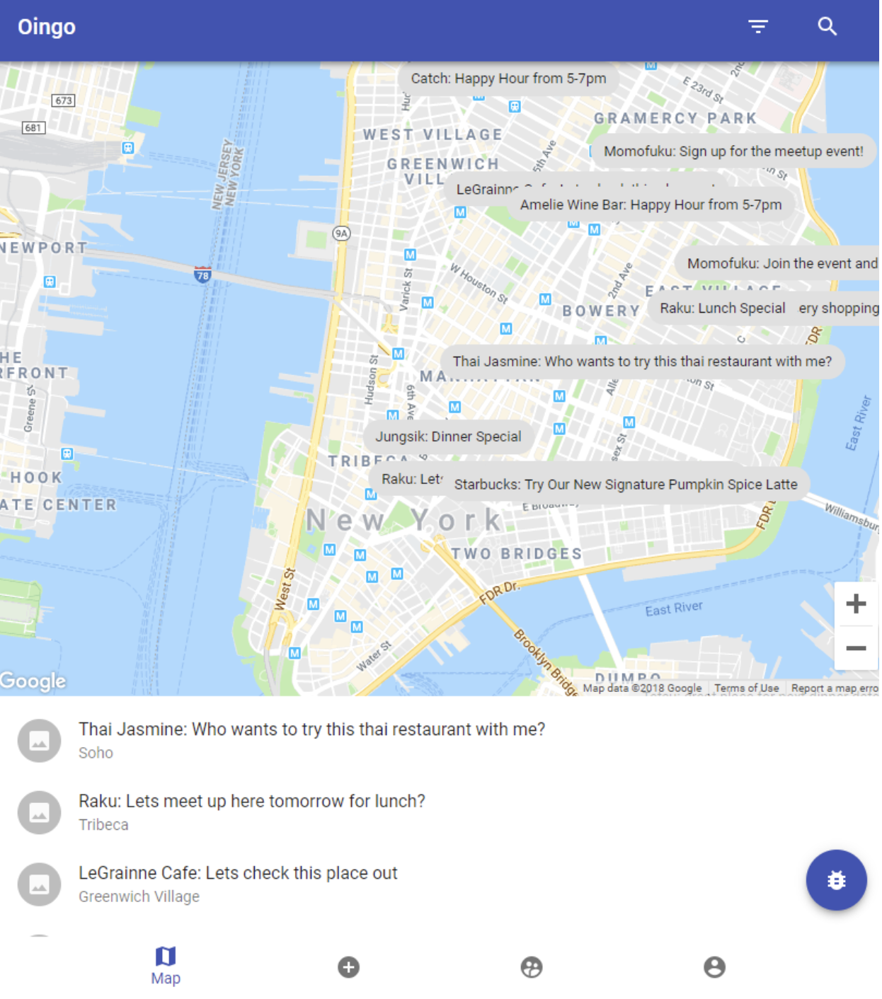
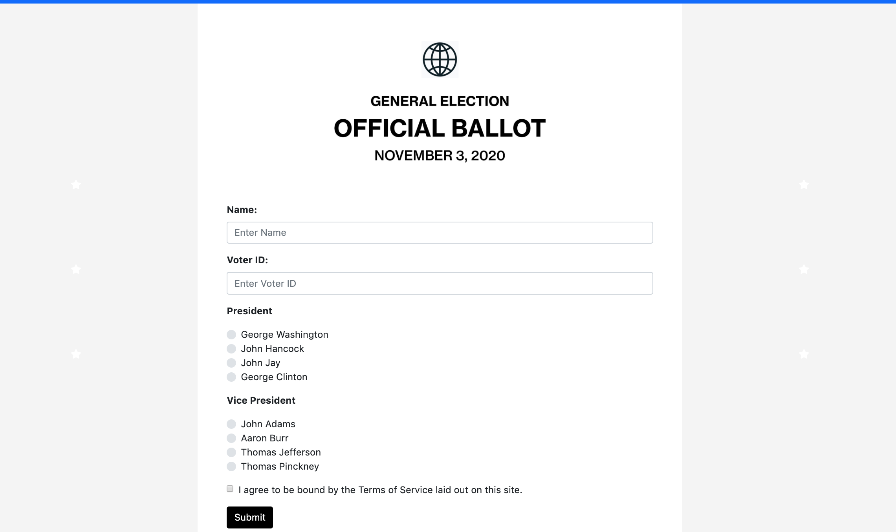
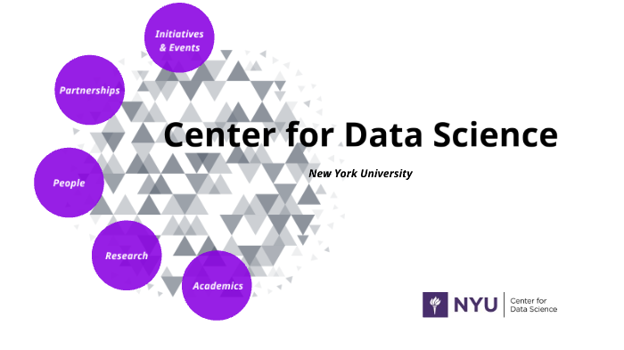
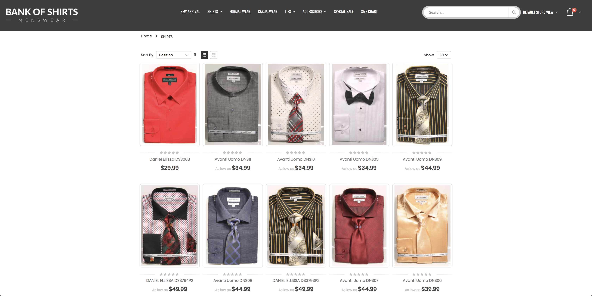

Restaurant Recommendation App (Node.js, SQL)
I built a database-driven web application using Node.js, SQL, and Google Maps API with functionalities such as a login page,
a restaurant recommendation page based on user's real-time location, save the favorite restaurants in user's note, etc.
Selected MySQL for data storage.

Real-time Voting System (Python, Kafka)
This real-time voting web application was made for the 2020 United States presidential election with Apache Kafka,
which enables batch processing 1 million+ of votes in every 5 seconds; Selected MongoDB for data storage.


Pipeline for 1000+ Kaggle Competitions (Python)
This was a project that 60 students of the entire class worked together under the supervision of Prof. Iddo Drori at NYU Center for Data Science. We achieved a data pipeline which processes 1000+ Kaggle Competitions' datasets and chooses the best machine learning
model and returns the most accurate prediction for each Kaggle competition.

DJ's Beauty Supply: Online Shopping Platform
I developed this online shopping platform for a beauty supply brand with JavaScript, CSS, HTML5, and Magento
Tang Two: Online Food Ordering Website
I developed this online food ordering website for a restaurant client with PHP, CSS, HTML5, and Wordpress

Bank of Shirts: Online Shopping Platform
I developed this online shopping platform for a fashion brand with JavaScript, CSS, HTML5, and Magento
